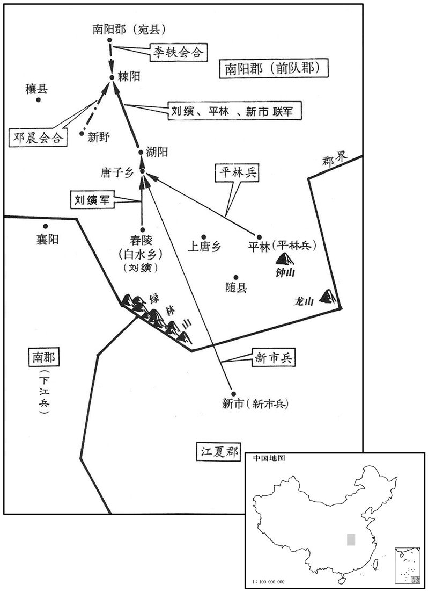

公元22年资治通鉴：本年记事、原文与白话对照
按原书编年位置阅读；追叙和史论不等于本年发生的事件。白话采用所据译本，缺译不以生成译文补齐。
卷38 · 本年记事
公元22年 · 汉孝平皇帝地皇三年
三年〔（壬午、二二）〕
上传原文的注释括号有异常，字符原样保留；无法可靠划分的段落默认全文显示。
本年事件索引（现代整理）
- 王莽在长安建成九庙，并以怪异仪仗出行
- 赤眉军杀死王莽所任将领景尚
- 关东发生人相食的惨况
- 王莽遣王匡、廉丹东征赤眉，军纪败坏激起民怨
- 王莽强令百姓煮食草禾，反增民困
- 绿林军分为下江、新市两支，起兵反莽
- 蝗灾自东方蔽天而来
- 数十万流民入关，赈济官吏侵吞粮食致大量饿死
- 王莽听信长安市官欺瞒，误以为城中百姓衣食充足
- 新市军攻打随县，平林军响应起事
- 廉丹拒听冯衍劝告，执意继续讨伐赤眉
- 廉丹、王匡攻破无盐，斩首万余并获封赏
- 廉丹战死成昌，王匡逃走，部下拒降而尽数战死
- 王莽派大将分守关中、洛阳与敖仓
- 刘縯、刘秀兄弟招募舂陵子弟，刘秀参与举兵
- 刘縯、李通等谋划响应绿林军，李通家族因事发遭诛
- 刘縯联合新市、平林诸军攻取棘阳
- 严尤、陈茂虽击败下江军，王常等收兵再起
- 张宿出现彗星
- 刘縯进攻宛城失利，刘秀逃亡，姊妹与族人多战死
- 刘縯联合下江军王常，诸部合兵袭取蓝乡

本年形势与背景参考图

本年形势与背景参考图
春，正月，九庙成，纳神主。〔木主也。〕莽谒见，大驾乘六马，以五采毛为龙文衣，着角，长三尺。〔师古曰：以被马上也。着，陟略翻。长，直亮翻。〕又造华盖九重，〔古今注曰：华盖，黄帝所作也。黄帝与蚩尤战于涿鹿之野，常有云气，金枝玉叶，因而作华盖。重，直龙翻。〕高八丈一尺，〔高，居傲翻。〕载以四输车；挽者皆呼「登仙」，莽出，令在前。百官窃言：「此似輀车，〔輀，音而，丧车也。〕非仙物也。」
春季，正月，九庙建筑竣工，安放了神主。王莽去拜见，车队按照最高规格组成：他的乘车套着六匹马，每匹马都披着用五彩羽毛织成龙形图案的套子，头上装着角，有三尺长。又制造华丽的车盖九层，高八丈一尺，用四轮大车装载，拉车的人都呼喊“登仙”的口号。王莽外出时，让它走在前头。官吏们私下时说：“这象灵柩车，不是神仙的用物。”
二月，樊崇等杀景尚。〔景尚，去年所遣。〕
二月，樊崇等杀死了太师羲仲景尚。
关东人相食。
函谷关以东地区出现了人吃人的现象。
夏，四月，遣太师王匡、更始将军廉丹东讨众贼。〔更，工衡翻。〕初，樊崇等众既寖盛，乃相与为约：「杀人者死，伤人者偿创。」〔创，初良翻。〕其中最尊号三老，次从事，次卒史。〔师古曰：言不为大号。余谓三老、从事、卒史皆郡县史也。崇等起于民伍，所识止此耳。其后党众日盛，气势日张，则攻长安，立盆子，非其初不为大号也。〕及闻太师、更始将讨之，恐其众与莽兵乱，乃皆朱其眉以相识别，〔别，彼列翻。〕由是号曰赤眉。匡、丹合将锐士十余万人，〔将，即亮翻；下遣将同。〕所过放纵。东方为之语曰：「宁逢赤眉，不逢太师！太师尚可，更始杀我！」卒如田况之言。〔卒，子恤翻。〕
夏季，四月，王莽派遣太师王匡、更始将军廉丹东征讨伐众盗贼。最初，樊崇等人的部众既然逐渐强盛，于是互相约定：“杀人的抵命，伤人的养创。”其中最尊贵的称号是三老，其次是从事，再其次是卒史。等到听说太师与更始将军率军前来讨伐他们，恐怕部众跟王莽军队在混战时难于辨别，于是下令都用朱砂涂抹双眉，以便互相认识辨别，因此号称赤眉。王匡、廉丹一起率领精兵十余万人，一路放任士兵，不加约束。东部地区为此出现民谣说：“宁遇赤眉，不遇太师！太师尚可，更始杀我！”确实象田况所说的一样。
莽又多遣大夫、谒者分教民煮草禾为酪，〔服虔曰：煮木实。或曰，如今饵朮之属也。如淳曰：作杏酪之属也。师古曰：如说是也。〕酪不可食，重为烦费。〔师古曰：重，音直用翻。〕
王莽又派遣很多大夫和谒者分别告诉百姓把草木熬成糊状食品。但这种糊状食品无法吃，反倒增加人力、物力的浪费。
绿林贼遇疾疫，死者且半，乃各分散引去。王常、成丹西入南郡，号「下江兵」；王凤、王匡、马武及其支党朱鲔、张卬等北入南阳，号「新市兵」；〔郡国志，新市县属江夏郡。水经注：新市县治杜城，属竟陵郡。杜佑曰：汉新市县故城，在郢州富水县东北。〕皆自称将军。莽遣司命大将军孔仁部豫州，纳言大将军严尤、秩宗大将军陈茂击荆州，〔莽赐司卿及六卿号皆大将军。〕各从吏士百余人，乘传到部募士。〔传，知恋翻。〕尤谓茂曰：「遣将不与兵符，必先请而后动，是犹绁韩卢而责之获也。」〔师古曰：绁，系也。韩卢，古韩国之名犬也。黑色曰卢。绁，音私列翻。〕
绿林盗贼遇到瘟疫，死亡的将近一半，于是分兵离开了绿林山。王常、成丹等向西进入南郡，称“下江兵”；王凤、王匡、马武及其部下朱鲔、张等向北进入南阳，称“新市兵”。他们都自称将军。王莽派遣司命大将军孔仁巡察豫州，派遣纳言大将军严尤和秩宗大将军陈茂攻打荆州，各随带官员一百多人，乘坐传车，到辖区招募士兵。严尤对陈茂说：“派出将领不发给兵符，遇事一定要先请示然后才能行动，这犹如牵着猎犬而要求它去捉野兽呢。”
蝗从东方来，飞蔽天。
蝗虫从东方飞来，铺天盖地。
流民入关者数十万人，乃置养赡官禀食之，〔师古曰：禀，给也，音彼甚翻。食，读曰坔。〕使者监领，〔监，古衔翻。〕与小吏共盗其禀，〔师古曰：盗其禀者，盗所给之物。〕饥死者什七八。
流民进入函谷关的有几十万人，于是设置养赡官发粮食给他们吃，由使者监管。而使者却与小吏一起盗窃那些粮食，流民饿死的十有七八。
先是，莽使中黄门王业领长安市买，〔先，悉荐翻。〕贱取于民；民甚患之。业以省费为功，赐爵附城。莽闻城中饥馑，以问业。业曰：「皆流民也。」乃市所卖粱饭、肉羹，持入示莽曰：「居民食咸如此。」莽信之。
在此以前，王莽指令中黄门王业管理长安市场的买卖，他压低价格向百姓收购物品，百姓以此为患。王业由于节省收购费用立了功，被赏赐附城的爵位。王莽听说城里发生了饥荒，向王业询问情况。王业说：“都是流民。”于是买些市场上的精米饭和肉汁，拿进宫给王莽看，说：“居民的食物都是这样。”王莽相信了他的话。
秋，七月，新市贼王匡等进攻随；〔贤曰：随县，属南阳郡；今随州县。〕平林人陈牧、廖湛复聚众千余人，号「平林兵」，以应之。〔姓谱：廖，周文王子伯廖之后。风俗通：古有廖叔安，左传作「飂」，盖其后也。水经注：章水南径随郡平林县故城西，俗谓之将陂城，与新市接界。贤曰：廖，音力吊翻。平林，地名，在今随州随县东北。复，扶又翻。〕
秋季，七月，新市盗贼王匡等进攻随县。平林人陈牧、廖湛又聚众一千余人，称“平林兵”，以响应新市兵的攻势。
莽诏书让廉丹曰：「仓廪尽矣，府库空矣，可以怒矣，可以战矣！将军受国重任，不捐身于中野，无以报恩塞责！」〔塞，悉则翻。〕丹惶恐，夜，召其掾冯衍，以书示之。〔掾，俞绢翻。〕衍因说丹曰：「张良以五世相韩，椎秦始皇博浪之中。〔事见七卷秦始皇二十九年。说，轮芮翻。相，息亮翻。〕将军之先，为汉信臣；〔贤曰：廉褒，襄武人，宣帝时为后将军，即丹之先。〕新室之兴，英俊不附。今海内溃乱，人怀汉德，甚于周〔【章：十二行本「周」作「诗」；乙十一行本同；孔本同。】〕人思召公也；〔召公之教，明于南国，周人思之，为赋甘棠。召，音邵。〕人所歌舞，天必从之。〔贤曰：诗小雅曰：虽无德与女，式歌且舞。言汉氏之德，人歌舞之也。书曰：人之所欲，天必从之。〕今方为将军计，莫若屯据大郡，镇抚吏士，砥厉其节，纳雄桀之士，询忠智之谋，兴社稷之利，除万人之害，则福禄流于无穷，功烈着于不灭；何与军覆于中原，身膏于草野，功败名丧，耻及先祖哉！」〔师古曰：与，犹如也，丧，息浪翻。〕丹不听。衍，左将军奉世曾孙也。
王莽下诏书责备廉丹说：“仓库粮食已尽，国库财物已空，真该愤怒，真该出战了。将军身受朝廷委托的重任，如果不捐躯于荒野之中，就无法报答朝廷的厚恩，尽到所负的重大责任。”廉丹慌恐，晚上，召来他的属官冯衍，把诏书拿给看。冯衍趁机对廉丹说：“张良因为五代都是韩国的相国，所以在博浪沙中用铁椎谋刺秦始皇。将军的先人是汉朝的诚实臣属，新朝兴起，天下英雄豪杰没有人心悦诚服。现在全国崩溃大乱，百姓怀念汉朝恩惠，超过周朝百姓对召公的思念。人们所歌颂的，上天定会追随。现在我为将军设计，不如把部众屯驻在一个大郡，安抚官员，磨炼他们的品质，延揽英雄豪杰之士，询问忠直智慧的谋略，为国家兴利，替万人除害。那么，你的福禄将保持无穷，功业将永垂青史。何必连同你的军队一齐在荒野中毁灭，使你的尸体跟草木同时腐烂，身败名裂，使祖先蒙耻？”廉丹拒绝接受。冯衍是汉朝左将军冯奉世的曾孙。
冬，无盐索卢恢等举兵，反城附贼，〔师古曰：索卢，姓也。恢，名也。吕氏春秋：禽滑厘有门人索卢参。反城，据城以反也。一曰：反，音幡，今语贼犹曰幡城。索，音先各翻。余谓一说是。贤曰：无盐县，属东平郡；故城在今郓州须昌县之东。〕廉丹、王匡攻拔之，斩首万余级。莽遣中郎将奉玺书劳丹、匡，〔劳，力到翻。〕进爵为公；封吏士有功者十余人。
冬季，无盐县索卢恢等人占据县城起兵造反，响应赤眉。谦丹和王匡攻陷无盐，斩杀一万余人。王莽派遣中郎将捧着加盖了御玺的诏书去慰劳廉丹和王匡，进封二人为公，赐封有功的官员十多人。
赤眉别校董宪等众数万人在梁郡，〔校，户教翻；下同。梁国，时除为郡。〕王匡欲进击之；廉丹以为新拔城罢劳，罢，读曰疲。〕当且休士养威。匡不听，引兵独进，丹随之。合战成昌，〔师古曰：成昌，地名也。余据后汉书，亦当在无盐县界。〕兵败，匡走；丹使吏持其印、绂、节付匡〔绂，音弗。〕曰：「小儿可走，吾不可！」遂止，战死。校尉汝云、王隆等二十余人别，〔汝，姓也。左传：晋大夫女齐。陆德明曰：女，音汝。〕闻之，皆曰：「廉公已死，吾谁为生！」〔为，于伪翻。〕驰奔贼，皆战死。
赤眉军别部校尉董宪等人的部队几万人在梁郡活动，王匡想要进攻他们，廉丹认为新近攻下县城，士兵疲劳，应当暂时让士兵休息一下，以恢复战斗力。王匡不听，单独带领军队前进，廉丹只好跟着他。在成昌地方会战，王匡兵败逃走。廉丹吩咐军官拿着自己的印、绶带和符节交给王匡，说道：“小儿可以逃走，我不可以！”便留下来，战斗而死。校尉汝云和王隆等二十多人在另外的地方进行战斗，听到这个消息，都说：“廉公已经死了，我们还为谁活着？”飞马冲向贼军，都战斗而死。
国将哀章自请愿平山东，〔将，即亮翻。〕莽遣章驰东与太师匡并力。又遣大将军阳浚守敖仓；司徒王寻将十余万屯洛阳，镇南宫；大司马董忠养士习射中军北垒；〔恐当作「北军中垒。」〕大司空王邑兼三公之职。
国将哀章自愿请求去平定崤山以东地区。王莽派遣哀章赶往东方，跟太师王匡合作。又派遣大将军阳浚去防守敖仓；司徒王寻统领十多万人驻扎洛阳，坐镇南宫；大司马董忠在北军中垒营地训练士兵，演习武艺；大司空王邑兼理三公的职务。
初，〔【张：「初」下脱「景帝子」三字。】〕长沙定王发生舂陵节侯买，买生戴侯熊渠，熊渠生考侯仁。仁以南方卑湿，徙封南阳之白水乡，与宗族往家焉。〔贤曰：舂陵，乡名，本属零陵泠道县，在今永州唐兴县北；元帝时，徙南阳，仍号舂陵，故城在今随州枣阳县东。杜佑曰：枣阳，后汉蔡阳县；汉舂陵故城在今县东。〕仁卒，子敞嗣；值莽篡位，国除。节侯少子外为郁林太守，〔贤曰：郁林郡，今郴州县。余按唐郴州无郁林县，而唐之桂、柳、郁、邕、象、燕、浔、南、尹、乐、融、宾等州，皆汉郁林郡地。〕外生巨鹿都尉回，〔贤曰：巨鹿郡，今邢州县。余按唐邢州固有巨鹿县，而唐邢、赵二州皆汉巨鹿郡地。〕回生南顿令钦。〔贤曰：南顿县，属汝南郡；故城在今陈州项城县西。括地志：陈州南顿县，古顿子国；逼于陈，南徙，故曰南顿。〕钦娶湖阳樊重女，〔湖阳县，属南阳郡。宋白曰：湖阳县，古蓼国地。〕生三男：演，仲，秀，〔演，音衍。〕兄弟早孤，养于叔父良。演性刚毅，慷慨有大节，自莽篡汉，常愤愤，怀复社稷之虑，不事家人居业，倾身破产，交结天下雄俊。秀隆准日角，〔贤曰：隆，高也。许负云：鼻头为准。郑玄尚书中侯注云：日角，谓庭中骨起状如日。〕性勤稼穑；〔贤曰：种曰稼，敛曰穑。〕演常非笑之，比于高祖兄仲。〔贤曰：仲，合阳侯喜也，能为产业。高祖为太上皇寿曰：始大人常以臣不能治产业，不如仲力；今其业所就，孰与仲多﹖〕秀姊元为新野邓晨妻，秀尝与晨俱过穰人蔡少公，少公颇学图谶，言「刘秀当为天子」；〔少，诗照翻。谶，楚谮翻。〕或曰：「是国师公刘秀乎﹖」秀戏曰：「何用知非仆邪！」坐者皆大笑。晨心独喜。
最初，汉朝长沙定王刘发，生了舂陵节侯刘买，刘买生了戴侯刘熊渠，刘熊渠生了考侯刘仁。刘仁因南方地势低下，气候潮湿，被改封到南阳郡的白水乡，与宗族迁居于此。刘仁死，儿子刘敞继承爵位，正逢王莽篡夺帝位，封国撤除。舂陵节侯刘买的小儿子刘外当郁林太守，刘外生了钜鹿都尉刘回，刘回生了南顿令刘钦。刘钦娶湖阳樊重的女儿为妻，生了三个儿子：刘、刘仲、刘秀。兄弟幼年丧父，由叔父刘良抚养。刘性情刚强有毅力，慷慨有大节。自从王莽篡夺汉朝政权之后，刘时常愤愤不平，心怀光复汉朝的志向，不经营家产，反而卖田卖宅，用来结交天下英雄俊杰。刘秀生得鼻梁高耸，额角隆起，性格勤勉，爱好种田。刘常讥笑他，把他比作刘邦的哥哥刘喜。刘秀的姐姐刘元，是新野县邓晨的妻子，刘秀曾经跟邓晨一块儿拜访穰县蔡少公，少公对图谶颇有研究，说“刘秀当作天子！”有人接着说“这说的是国师公刘秀吧？”刘秀开玩笑说：“你怎么知道不是我呢？”在座的人都哄堂大笑。只有邓晨暗喜。
宛人李守，好星历、谶记，〔宛，于元翻。好，呼到翻。〕为莽宗卿师，〔贤曰：平帝五年，王莽摄政，郡国置宗师以主宗室。盖时尊之，故曰宗卿师之。余按莽置宗师，主汉宗室耳。此宗卿师，莽篡时所置也。〕尝谓其子通曰：「刘氏当兴，李氏为辅。」及新市、平林兵起，南阳骚动，通从弟轶谓通曰：〔从，才用翻。轶，音逸，又徒结翻。〕「今四方扰乱，汉当复兴。〔复，扶又翻，又如字。〕南阳宗室，独刘伯升兄弟泛爱容众，可与谋大事。」〔演，字伯升。〕通笑曰：「吾意也！」会秀卖谷于宛，〔宛，于元翻。〕通遗轶往迎秀，与相见，因具言谶文事，与相约结，定计议。通欲以立秋材官都试骑士日，劫前队大夫甄阜及属正梁丘赐，〔莽改南阳曰前队，置大夫职如太守，属正职如都尉。师古曰：队，音遂。甄，之人翻。〕因以号令大众，使轶与秀归舂陵举兵以相应。于是演召诸豪桀计议曰：「王莽暴虐，百姓分崩；今枯旱连年，兵革并起，此亦天亡之时，复高祖之业，定万世之秋也！」〔言定天下传之万世，此其时也。〕众皆然之。于是分遣亲客于诸县起兵，演自发舂陵子弟。诸家子弟恐惧，皆亡匿，曰：「伯升杀我！」及见秀绛衣大冠，〔董巴舆服志曰：大冠者，武官冠之。东观记：上时绛衣大冠、将军服也。〕皆惊曰：「谨厚者亦复为之！」乃稍自安。凡得子弟七八千人，部署宾客，自称「柱天都部」。〔贤曰：柱天，若天之柱也。都部者，都统其众也。〕秀时年二十八。李通未发，事觉，亡走；父守及家属坐死者六十四人。
宛城人李守，喜好星象与谶书，担任王莽的宗卿师，曾对他的儿子李通说：“刘姓当会复兴，李姓将做辅佐大臣。”等到新市兵、平林兵崛起，南阳郡人心浮动，李通的堂弟李轶对李通说：“现在天下动乱，汉朝当会重新兴盛。南阳刘姓皇族，只有刘伯升兄弟博爱，对人宽大，可以与其磋商大事。”李通笑着说：“我正有此意。”正好刘秀运粮食到宛城贩卖。李通派李轶前往迎接刘秀，与其相见，详细地谈了谶文的事，于是互相结交，商定了计划。李通打算在立秋那天，趁着骑兵武士大检阅的时候，劫持前队大夫甄阜和属正梁丘赐，然后发号施令，聚众起兵，让李轶与刘秀回到舂陵起兵，以互相呼应。于是刘召集当地豪杰商量说：“王莽凶残暴虐，百姓分崩离析，而今又连年大旱，到处兵荒马乱，这是上天灭亡他的时候，是恢复高祖的大业，建立千秋万世的功劳的时候！”大家都表示同意。于是分别派出亲友宾客到各县起事，刘自己则发动舂陵的子弟。各家子弟都感到害怕，纷纷逃避躲藏，说：“刘害死我了！”到看见刘秀身着红衣，头戴大冠，改穿将军服装，都吃了一惊，说：“谨慎忠厚的人也干上了呀！”心里才逐渐安定。共集结子弟七八千人，安排下属，自称柱天都部。刘秀当时二十八岁。李通的起兵计划还未付诸实施，就泄漏了，因而逃亡。他的父亲李守与家属因罪被诛杀，共死六十四人。
演使族人嘉招说新市、平林兵，〔说，输芮翻。〕与其帅王凤、陈牧西击长聚；〔帅，所类翻。聚，才喻翻；下同。〕进屠唐子乡，〔贤曰：多所诛杀曰屠。唐子乡有唐子山，在今唐州湖阳县西南。〕又杀湖阳尉。军中分财物不均，众恚恨，欲反攻诸刘；〔恚，于避翻。〕刘秀敛宗人所得物，悉以与之，众乃悦。进拔棘阳，〔贤曰：棘阳，县名，属南阳郡，在棘水之阳，古谢国也；故城在今唐州湖阳县西北。棘，音纪力翻。〕李轶、邓晨皆将宾客来会。〔将，即亮翻。〕
刘让同族人刘嘉去说服了新市、平林兵，与他们的首领王凤、陈牧一起西击长聚。进攻唐子乡杀伤很多人，又杀死了湖阳尉。由于军中分配财物不公平，众人愤怒怨恨，打算反击刘姓家族的部队。刘秀收拢同宗族人所得到的财物，全部交出，大家才高兴了。再向前挺进，攻陷棘阳。李轶、邓晨，各带着他们的宾客前来会合。
严尤、陈茂破下江兵；成丹、王常、张卬等收散卒入蒌溪，略锺、龙间，〔贤曰：蒌，音力于翻。盛弘之荆州记曰：永阳县北有石龙山，在今安州应山县东北。又随州随县东北有三钟山。〕众复振；〔复，扶又翻；下同。〕引军与荆州牧战于上唐，〔贤曰：上唐，乡名，故城在今随州枣阳县东北。水经注：上唐本蔡阳县之上唐乡，春秋时唐国也。〕大破之。
严尤、陈茂打败下江兵；下江兵首领成丹、王常、张等，收集逃散的士兵，退入蒌，大三钟山跟石龙山之间展开战斗，人数增多，声势又振。随后与荆州牧在上唐会战，大破州府官军。
十一月，有星孛于张。〔贤曰：张，南方宿。续汉志曰：张为周地。晋书天文志：张六星，在天庙北。孛，蒲内翻。〕
十一月，有异星出现在张六星旁。
刘演欲进攻宛，至小长安聚，〔贤曰：续汉书：淯阳县有小长安聚，故城在今邓州南阳县南。杜佑曰：南阳，汉宛县；县南三十七里有小长安。〕与甄阜、梁丘赐战；时天密雾，汉军大败。秀单马走，遇女弟伯姬，与共骑而奔；前行，复见姊元，趣令上马，〔骑，奇寄翻。复，扶又翻；下同。趣，读曰促。上，时掌翻。〕元以手挥曰：「行矣，不能相救，无为两没也！」会追兵至，元及三女皆死，演弟仲及宗从死者数十人。〔从，才用翻。〕
刘打算进攻宛城，挺进到小长安聚，与前队大夫甄阜、属正梁丘赐交战。当时，大雾迷漫，刘率领的汉军大败。刘秀单骑逃命，遇到妹妹刘伯姬，兄妹共乘一马奔跑。向前行进，又遇到姐姐刘元，刘秀叫她火速上马。刘元挥手说：“跑吧，你们无法救我，不要死在一起！”这时追兵已到，刘元跟她的三个女儿都被官府军诛杀。刘的弟弟刘仲及刘姓宗族一同死亡的有数十人。
演复收会兵众，还保棘阳。阜、赐乘胜留辎重于蓝乡，〔贤曰：比阳县有蓝乡。重，直用翻。〕引精兵十万南渡潢淳，〔贤曰：郦道元水经注曰：诸水二湖流注，合为黄水；又南经棘阳县之潢淳聚，又谓之潢淳水。在今唐州湖阳县。〕临沘水，〔水经注：沘水出沘阳县东北大胡山，南与沣水会，谓之派水；昔汉光武破甄阜、梁丘赐于沘水西，斩之于斯水也。杜佑曰：汉舞阳故城在唐州泌阳县北；有泌水，在县南，光武破阜、赐处。〕阻两川间为营，绝后桥，示无还心。新市、平林见汉兵数败，〔数，所角翻。〕阜、赐军大至，各欲解去，演甚患之。会下江兵五千余人至宜秋，〔贤曰：宜秋，聚名，在沘阳县。余按续汉志，南阳平氏县有宜秋聚。〕演即与秀及李通造其壁曰：〔造，七到翻。〕「愿见下江一贤将，议大事。」众推王常。演见常，说以合从之利，〔贤曰：以利合曰从。说，输芮翻；下同。从，子容翻。〕常大悟曰：「王莽残虐，百姓思汉。今刘氏复兴，〔复，扶又翻；下同。〕即真主也；诚思出身为用，辅成大功。」演曰：「如事成，岂敢独飨之哉！」遂与常深相结而去。常还，具为余将成丹、张卬言之。〔常与演会，余二将在军。为，于伪翻。将，即亮翻。〕丹、卬负其众曰：「大丈夫既起，当各自为主，何故受人制乎！」常乃徐晓说其将帅曰：「王莽苛酷，积失百姓之心，民之讴吟思汉，非一日也，故使吾属因此得起。夫民所怨者，天所去也；民所思者，天所兴也。举大事，必当下顺民心，上合天意，功乃可成；若负强恃勇，触情恣欲，虽得天下，必复失之。以秦、项之势，尚至夷覆，况今布衣相聚草泽，以此行之，灭亡之道也。今南阳诸刘举〔【章：十二行本「举」下有「宗起」二字；乙十一行本同；孔本同；张校同；退斋校同。】〕兵，观其来议者，皆有深计大虑，王公之才，与之并合，必成大功，此天所以佑吾属也！」下江诸将虽屈强少识，〔屈强，梗戾貌。屈，音居勿翻。强，音其两翻。少，诗沼翻。〕然素敬常，乃皆谢曰：「无王将军，吾属几陷于不义！」〔几，居希翻。〕即引兵与汉军、新市、平林合。于是诸部齐心同力，锐气益壮。演大飨军士，设盟约，休卒三日，分为六部；十二月，晦，潜师夜起，袭取蓝乡，尽获其辎重。〔重，直用翻。〕
刘又集结兵众，退到棘阳据守。甄阜、梁丘赐乘胜把物资留在蓝乡，率领精兵十万南渡潢淳水，到达了水，在潢淳水与水之间扎营布防，破坏身后的桥梁，表示绝不回师的决心。新市兵、平林兵看到汉兵多次遭到挫败，而甄阜、梁丘赐的军队要大举进攻，纷纷打算逃走，刘忧心如焚。正好下江兵五千余人进抵宜秋聚，刘带着刘秀、李通亲自到他们营寨拜访，说：“我们愿见下江的一位贤明将领，商议大事。”下江兵推举王常。刘见到王常，陈述联合作战的利益。王常大大省悟，说：“王莽残酷暴虐，百姓思念汉朝。而今刘姓家族复兴，就是真正的天下之主。我愿挺身而出效力，辅佐大业成功。”刘说：“如果事业成功，我岂敢独自享受？”于是与王常深相结交，告辞而去。王常回来，把他的想法告诉下江兵的其他将领成丹、张。成丹、张自负他们的兵力强大，说：“大丈夫既然起事，应该自己当主子，为什么受别人控制呢？”王常于是不慌不忙地向他们分析说：“王莽苛刻残酷，不断丧失民心。百姓歌唱吟咏，思念汉朝，已经不是一天的事了。正因为如此，我们才能够趁机崛起。民心怨恨的，上天定会铲除；民心盼望的，上天定会赐予。兴起大事业，必须下顺民心，上合天意，然后大功才可以成就。如果仗恃自己强大勇猛，感情用事，为所欲为，虽然得到天下，必然会再失掉它。以秦王朝和西楚霸王项羽的势力，尚且归于消灭，何况而今我们这些平民，在山林水泽聚集成群，如果也任情纵欲，那是走灭亡之路。而今，南阳郡刘姓家族起兵，观察他们派来跟我们商谈的这几位，都有深谋远虑，有王爵公爵的才能。与他们合作，必然成就大功，这是上天用来保我们的啊！”下江兵的将领们虽然倔强，而又缺少见识，然而向来尊敬王常，于是一致道歉说：“如果没有王将军，我们几乎陷于不义！”立即率军与汉军、新市兵、平林兵会合。于是各部同心协力，士气高昂。刘用丰盛的酒食招待军队，订立盟约，让士兵休息三天，然后，把军队分为六路。十二月三十日，军队秘密行动，乘夜出发，攻取兰乡，把甄阜军的物资全部夺获。